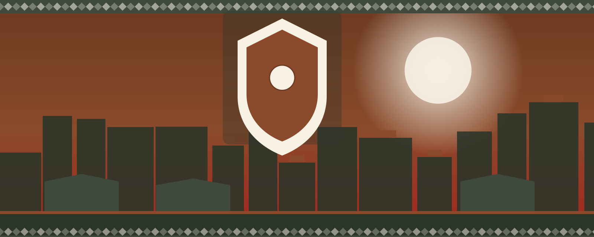

Where Benin City business grows together
Connect with hundreds of local businesses, find new customers, and help shape the city's economy.
Join the ChamberUpcoming Events
Meet fellow members, learn from local leaders, and grow your network.
-
14Oct
Chamber Breakfast Mixer
Start the month with coffee, introductions, and a five-minute pitch slot for new members.
-
02Nov
Small Business Funding Workshop
A practical session on microloans and grants with Benin City Microfinance Bank.
-
21Nov
Artisan & Trade Showcase
Member vendors display goods and services to the public, from textiles to bronze work.
Benin City Weather
Plan your visit or event with the current forecast.
Member Spotlights
A rotating look at our Gold and Silver members, refreshed every visit.